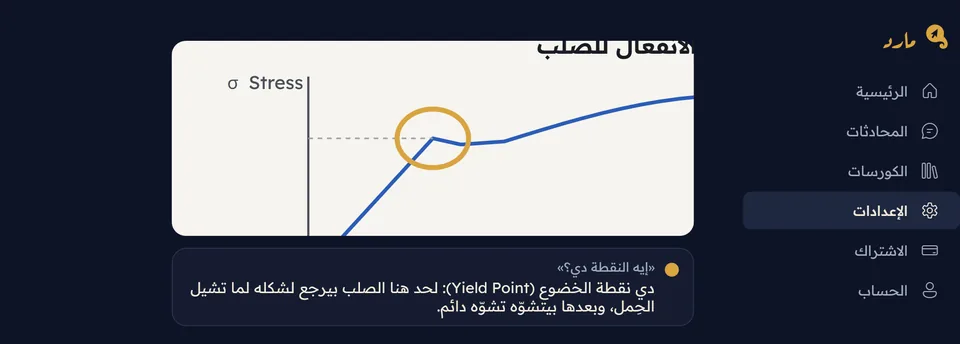
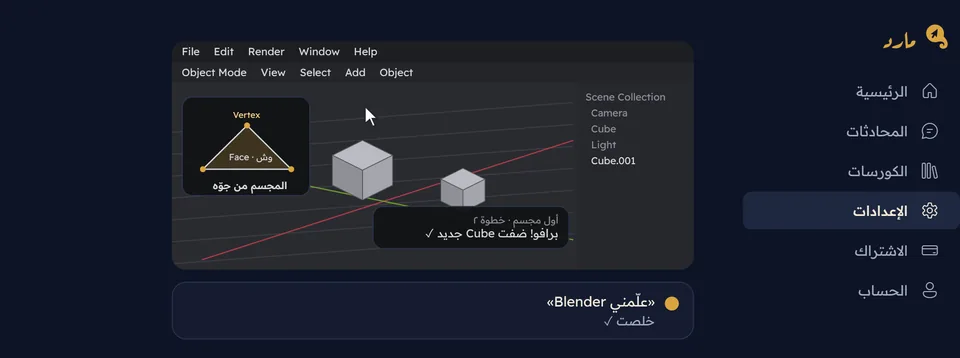

بيتكلم بلهجتك · بيشوف شاشتك · بيعلّمك · بيعملها بدالك
صاحبك اللي فاهم
في الكمبيوتر
مارد عايش جنب الماوس. دوس Right Ctrl واسأل بصوتك، بلهجتك: يشوف شاشتك، يشاورلك على الزرار الصح، ويعلّمك خطوة خطوة. ولو مستعجل، قوله اعملهالي
ويعملها قدامك.
من غير فيزا · Windows 10 و 11 · بيحدّث نفسه
على الموبايل؟ سجّل دلوقتي، ونزّله بعدين على الكمبيوتر.
- 70+حاجة بيعملها
- أي برنامجعلى Windows
- كل اللهجاتمصري، خليجي، شامي، فصحى، English
- ببلاشتجربة من غير فيزا
شغّال جوّه أي برنامج أو موقع على جهازك
اطلب أي حاجة.
مش محتاج تعرف اسم الزرار ولا تكتب أمر. قوله اللي في دماغك، بلهجتك، زي ما بتكلم صاحبك.
مش مساعد واحد. ده فريق كامل.
بيشرح، ويعلّم، ويكتب، ويرسم، ويخلّص شغلك، كله من جنب الماوس.
بيشاورلك على الزرار الصح
سهم دهبي بيروح على المكان بالظبط في أي برنامج، والزرار ينوّر. ولو مش فاهم حاجة، ارسم حواليها واسأل يعني إيه دي؟

بيتكلم بلهجتك
اسأل بالمصري أو الخليجي أو الشامي أو الفصحى أو English، ومارد يرد بنفس لهجتك وبصوت طبيعي.
اعملهالي
يمسك الماوس والكيبورد ويخلّصها قدامك. 3 مهام مع بعض، وبيسألك قبل أي حاجة حساسة.
علّمني AutoCAD
قوله أي برنامج، يقرا أحسن الشروحات ويعملك كورس كامل على قدّك، ويعلّمك جوّه البرنامج نفسه.
اتكلم، وهو يكتب
في الإيميل، في الواتساب، في Word. كلامك يتكتب مكان المؤشر، بالعربي أو English. ببلاش.
شاشتك بقت سبورة
اسأله يشرحلك أي موضوع، يرسمه على شاشتك خطوة خطوة والكلام مكتوب تحت، ويحفظ الشرح عشان ترجعله.

كل الذكاء الاصطناعي في اشتراك واحد
صور وفيديو وصوت وكتابة وشرح. مارد بيبعت كل طلب للموديل الأقوى فيه، بدل 5 اشتراكات.
ده مارد بجد.
لقطات من البرنامج نفسه، مش رسومات.
اتصوّرت بحساب تجريبي. على جهازك بتظهر فوق البرامج اللي إنت فاتحها.
مش محتاج كورس. ولا فيديو على يوتيوب.
قول «علّمني Excel» وخلاص. مارد بيعملك خطة على قدّك، ويعلّمك جوّه البرنامج نفسه وإنت بتشتغل.
الطريقة القديمة
- فيديو ساعة، ومعظمه مش اللي إنت محتاجه
- وقّف، ارجع، بدّل بين الفيديو والبرنامج
- شاشته شكل وشاشتك شكل تاني
- تقف في حتة ومحدش يرد عليك
مع مارد
- بيعلّمك اللي إنت محتاجه دلوقتي بس
- جوّه البرنامج اللي فاتحه، على شاشتك إنت
- بيشاورلك على الزرار ويتأكد إنك دوست عليه
- اسأل في أي وقت، بلهجتك، وهيرد عليك بصوته
شاشتك بتاعتك.
مارد بيشوف شاشتك بس لما تطلب منه، وعمره ما بيعمل حاجة من وراك.
شاشتك وصوتك بيتبعتوا بس لما تطلب حاجة: سؤال أو درس أو مهمة. والمايك شغّال وإنت دايس على الزرار بس.
اللي بتكتبه في خانة باسورد عمره ما بيتقري ولا بيتبعت، ومارد مش بيكتب فيها أبدًا.
قبل المسح أو الدفع أو الإرسال بيستنّى موافقتك، واللي بيمسحه بيروح سلة المحذوفات. وEsc بيوقّف كل حاجة.
المحادثات واللي بيفتكره عنك متحفظين على جهازك إنت، وتمسحهم في أي وقت.
بنحفظ سجل لاستخدامك 30 يوم عشان نصلّح ونحسّن، من غير صور ولا تسجيلات صوت، وبيتمسح لوحده.
لو حرّكت الماوس وهو شغّال، بيستنّاك لحد ما تخلص. إنت اللي ماسك الدفّة.
كل اللي مارد بيعمله.
كل الذكاء الاصطناعي في اشتراك واحد.
مارد بيستخدم موديلات Claude وChatGPT وGemini وHiggsfield وElevenLabs. بدل خمس اشتراكات، اشتراك واحد.
سيب مارد يختاربيبعت كل طلب للموديل الأقوى فيه: الشرح، الكتابة، الصور، الفيديو، أو الصوت.
أو اختار بنفسكعايز Claude بالذات؟ اختاره وكلّمه على طول.
من غير مارد، كل شهر
- ChatGPT Plus
- $19.99
- Claude Pro
- $20.00
- Google AI Pro Gemini
- $19.99
- Higgsfield أقل باقة
- $15.00
- ElevenLabs Starter
- $6.00
- المجموع
- $80.98
الأسعار هي أقل باقة مدفوعة شهرية لكل خدمة زي ما هي معلنة في أكتوبر 2026. مارد بيديك موديلاتهم جوّه رصيدك الشهري، مش اشتراكاتهم نفسها.
ابدأ ببلاش. ادفع لما تحبه.
كل باقة بتبدأ بتجربة مجانية: 3 أسئلة، ومهمة «اعملهالي»، ودرس كامل، من غير ما تدفع حاجة. وتلغي في أي وقت.
كل الباقات فيها كل حاجة. الفرق بس قد إيه هتكفيك.
مارد مينيMared Mini
لو بتسأل كام سؤال في الأسبوع.
- أسئلة عن أي حاجة على شاشتك
- شرح الزراير والبرامج
- كتابة بالصوت ببلاش
مارد بلسMared Plusالأكتر اختيارًا
لو بتتعلم برنامج جديد أو بتشتغل عليه كل يوم.
- دروس وكورسات كاملة
- مهام «اعملهالي» كل يوم
- يكفيك الشهر كله
مارد ماكسMared Max
للي شغّال مع مارد طول اليوم.
- مونتاج فيديو وتصميم وأوتوكاد ساعات
- صور وفيديو وفويس أوفر بالذكاء الاصطناعي
- كورسات كتير ومهام طويلة مع بعض
ادفع بالكارت أو بإنستاباي أو فودافون كاش أو اتصالات كاش أو أورنج كاش.
ادفع بالكارت، وتلغي في أي وقت.
أسئلة بتتسأل كتير
هو ببلاش فعلًا؟
أيوه. التجربة المجانية فيها 3 أسئلة، ومهمة «اعملهالي»، ودرس كامل، من غير فيزا. ولو عجبك، اختار باقتك وكمّل.
هو بيشوف شاشتي على طول؟
لأ. بيشوف شاشتك بس لما تطلب منه حاجة: سؤال، أو درس، أو مهمة. والمايك شغّال وإنت دايس على الزرار، أو لما تشغّل الكلام من غير ما تمسك.
بيتكلم بأنهي لهجة؟
بلهجتك. لو سبته على «زي ما بتتكلم» بيرد بنفس اللهجة اللي سألت بيها، وتقدر تختار مصري أو خليجي أو شامي أو فصحى أو English من الإعدادات.
بيشتغل على أنهي برامج؟
أي برنامج أو موقع على Windows: Office وPhotoshop وAutoCAD وPremiere والمتصفح وغيرهم، من غير أي إضافات.
هيدوس على حاجات من غير ما أعرف؟
لأ. بيعمل حاجات بس لما تقوله «اعملهالي»، وبيسألك قبل أي حاجة ممكن تبوّظ زي المسح أو الدفع، واللي بيمسحه بيروح سلة المحذوفات. ولو حرّكت الماوس بيستنّاك، وEsc بيوقّفه.
إيه الفرق بين الباقات؟
كل الباقات فيها كل حاجة. الفرق في الرصيد بس: السؤال العادي بياخد حوالي رصيد واحد، والدروس والمهام الطويلة والصور والفيديو بياخدوا أكتر. لو بتشتغل مع مارد ساعات كل يوم، ماكس هو اللي هيكفيك.
فيه نسخة للماك؟
لسه. مارد شغّال على Windows 10 و 11 بس دلوقتي.
أقدر ألغي إمتى؟
في أي وقت، بضغطة من صفحة الحساب في مارد، وباقتك بتفضل شغّالة لحد آخر الشهر اللي دفعته.
أقدر أدفع بفودافون كاش أو إنستاباي؟
أيوه: إنستاباي وفودافون كاش واتصالات كاش وأورنج كاش. بتحوّل من الموبايل، وبنفعّل اشتراكك أول ما نتأكد من التحويل.
بتحفظوا إيه عني؟
بنحفظ عندنا سجل لاستخدامك 30 يوم بس: الشاشات اللي فتحتها، أسئلتك وردود مارد، الكلام اللي كان ظاهر على شاشتك وقت السؤال، خطوات المهام، الأخطاء، ومواصفات جهازك. مفيش فيه صور ولا تسجيل لصوتك ولا باسوردات، وبيتمسح لوحده بعد 30 يوم. محدش بيشوفه غير فريق مارد، وبنستخدمه عشان نصلّح المشاكل ونحسّن مارد. ومحادثاتك نفسها متحفظة على جهازك.
محتاج إنترنت؟
أيوه، مارد محتاج إنترنت عشان يفكّر ويتكلّم.
جرّبه النهارده، ببلاش.
دقيقتين وهيكون جنب الماوس بتاعك.
نزّل لـ Windows- افتح الملف اللي نزل.
- لو ظهر «Windows protected your PC»: دوس More info وبعدين Run anyway.
- سجّل بإيميلك، ومارد هيوريك كل حاجة خطوة خطوة.